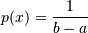
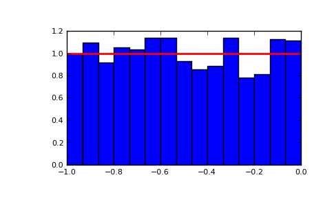

numpy.random.uniform¶
- numpy.random.uniform(low=0.0, high=1.0, size=1)¶
Draw samples from a uniform distribution.
Samples are uniformly distributed over the half-open interval [low, high) (includes low, but excludes high). In other words, any value within the given interval is equally likely to be drawn by uniform.
Parameters : low : float, optional
Lower boundary of the output interval. All values generated will be greater than or equal to low. The default value is 0.
high : float
Upper boundary of the output interval. All values generated will be less than high. The default value is 1.0.
size : int or tuple of ints, optional
Shape of output. If the given size is, for example, (m,n,k), m*n*k samples are generated. If no shape is specified, a single sample is returned.
Returns : out : ndarray
Drawn samples, with shape size.
See also
- randint
- Discrete uniform distribution, yielding integers.
- random_integers
- Discrete uniform distribution over the closed interval [low, high].
- random_sample
- Floats uniformly distributed over [0, 1).
- random
- Alias for random_sample.
- rand
- Convenience function that accepts dimensions as input, e.g., rand(2,2) would generate a 2-by-2 array of floats, uniformly distributed over [0, 1).
Notes
The probability density function of the uniform distribution is

anywhere within the interval [a, b), and zero elsewhere.
Examples
Draw samples from the distribution:
>>> s = np.random.uniform(-1,0,1000)
All values are within the given interval:
>>> np.all(s >= -1) True >>> np.all(s < 0) True
Display the histogram of the samples, along with the probability density function:
>>> import matplotlib.pyplot as plt >>> count, bins, ignored = plt.hist(s, 15, normed=True) >>> plt.plot(bins, np.ones_like(bins), linewidth=2, color='r') >>> plt.show()
(Source code, png, pdf)

{kind=link}